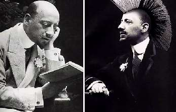

Борис Акунин
Мой календарь
Лучше - во всяком случае благоразумнее - вести себя скромно и прилично, никого не раздражать и вообще не высовываться. Но иногда совершенно необходимо, для разрядки и психического здоровья, выкинуть что-нибудь экстравагантное, заставляющее окружающих посмотреть на вас по-иному. Просто потому что каждый из нас - индивидуальность и вообще единственный на свете. Такого, как вы, никогда не было и больше не будет.
Если у вас есть тайная потребность учудить что-нибудь из ряда вон выходящее, сделайте это сегодня. А потом снова ведите себя образцово - до следующего 12 марта.
Дело в том, что мы отмечаем день рождения одного из самых эксцентричных деятелей искусства - великого и ужасного, восхитительного и уморительного Габриэля д’Аннунцио (1863 - 1938).
Вот уж человек, который всегда и любой ценой хотел выделяться из толпы. И у него получалось. Маленький, плешивенький, неуклюжий (однажды вывалился из окна), д’Аннунцио был королем эпатажа и выпендрежа.
Пересказывать его колоритную биографию не буду - ограничусь несколькими картинками.
Сегодня хороший день, чтобы немножко побыть Габриэлем д’Аннунцио. Устройте какую-нибудь шумную акцию, сумасбродный праздник, аттракцион. Или по крайней мере нарядитесь райской птицей. А с завтрашнего дня опять ведите себя прилично.